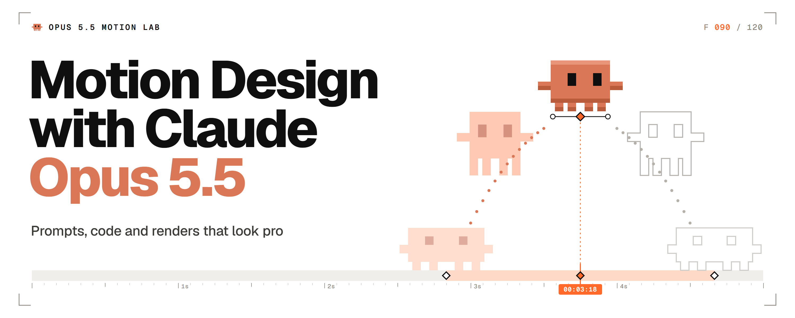
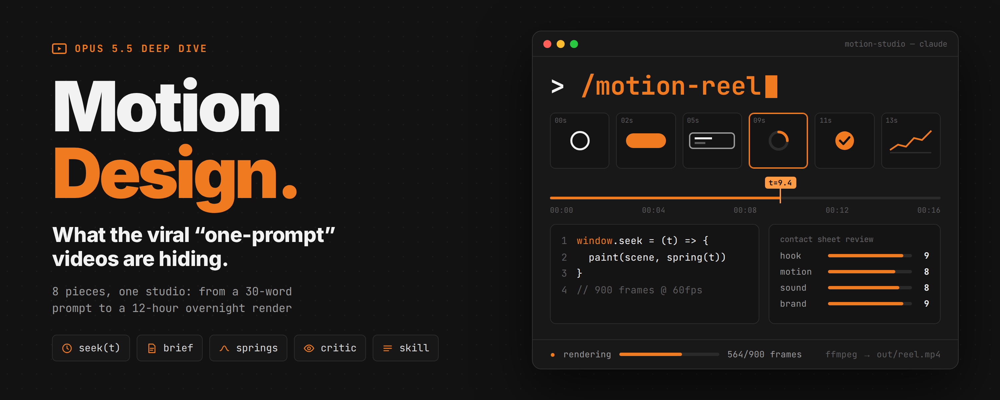

鱼知道 · 审美日报
X 雷达
· 文章
文章
译文与长文存档
从 X Article 译成中文的长文，方便离线阅读。版式尽量贴近原文，图片与视频已内嵌。
全部

Opus 5.5 动效实验室：让 Claude 像工作室一样做动画
2026-09-30 · @flxrnc · Florence
三段 Opus 5.5 动效实验笔记：提示词、跟进与数字收据。含开场液态铬等视频。

Opus 5.5 运动设计：病毒「一句提示」视频藏着什么
2026-10-02 · @seeconvm · seeco
拆开病毒 one-prompt 片子：帧函数、机架、brief、参考、评审闭环与 skill。
Grok Bot Agents：搭建 24/7 AI Agent 图（五步指南）
2026-08-19 · @0xCodila · codila
任务契约、Chief、最小专家团队、例程与三跑证明——搭一支可控的 AI 团队。